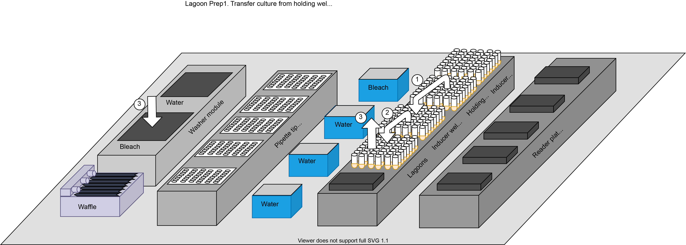
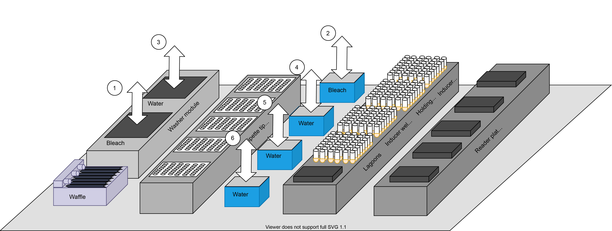
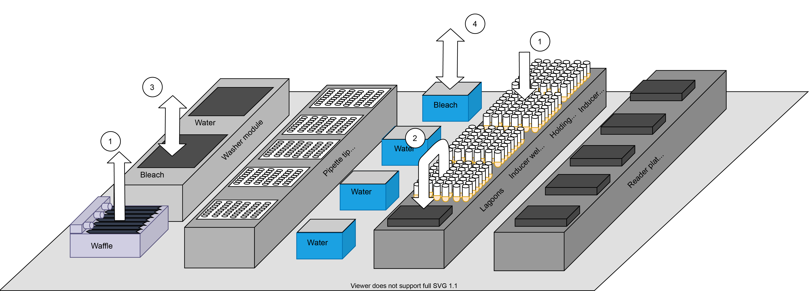
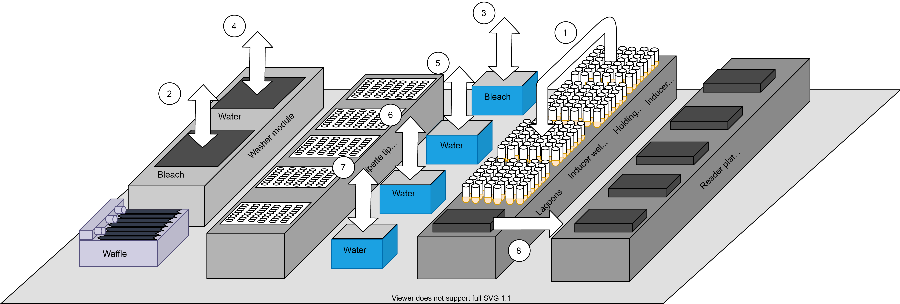

PRANCE
Setup
Run
Lagoon Prep
{kind=link}
def prep_lagoons(state_data):
print("prep_lagoons")
logging.info('Start of cycle')
state_data.error_recovery=False
state_data.lagoon_tips_iter += 1
lagoon_tips = lagoon_tips_cycle(state_data.lagoon_tips_iter)
# wait for waffle to finish cleaning
state_data.iter_start_time = time.time()
wash_empty_refill(ham_int, refillAfterEmpty=1, # 3=Refill chamber 2 only, which is BLEACH, 1 = refill both chambers
chamber1WashLiquid=1, #1=Liquid 2 (water)
chamber2WashLiquid=0) # 0=Liquid 1 (red container) (bleach)
async_clean.join()
tip_pick_up_96(ham_int, lagoon_tips)
# Move holding well contents to inducing site
aspirate_96(ham_int, holding_wells, 450)#TODO: holding wells empty vol needs to be about 50uL or else will grow too much ## Raise the liquid height a little if they're not growing enough in the wells
dispense_96(ham_int, inducer_wells, 450, mixCycles = 2, mixVolume = 300, liquidHeight=20, dispenseMode = 9, **liq_move_param) #TODO: do we need airTransportRetractDist=30, dispenseMode=9 (mode: blowout)?
aspirate_96(ham_int, inducer_wells, 450, liquidHeight=15, **liq_move_param) # 1.5 cm is about the right height for 350 uL
dispense_96(ham_int, lagoons, 450, mixCycles = 2, mixVolume = 300, liquidHeight=20, dispenseMode = 9, **liq_move_param) #TODO: do we need airTransportRetractDist=30, dispenseMode=9 (mode: blowout)?
# Drain lagoons to constant height
aspirate_96(ham_int, lagoons, air_vol, liquidHeight = 50, **liq_move_param)#TODO: holding wells empty vol needs to be about 50uL or else will grow too much ## Raise the liquid height a little if they're not growing enough in the wells
aspirate_96(ham_int, lagoons, 350, liquidHeight=fixed_lagoon_height, **liq_move_param)
dispense_96(ham_int, waste, 350, liquidHeight=5, dispenseMode=8, **liq_move_param)
dispense_96(ham_int, waste, air_vol, liquidHeight=10, dispenseMode=9, **liq_move_param)
state_data.write_state_data()
return (state_data)
Bleach Tips
{kind=link}
def bleach_mounted_tips_step(state_data):
lagoon_tips = lagoon_tips_cycle(state_data.lagoon_tips_iter)
if state_data.error_recovery:
tip_pick_up_96(ham_int, lagoon_tips)
state_data.error_recovery=False
bacteria_to_use = read_manifest(local_dir)
bacteria_id_tuple=('3', '2', '1', '0')
first_bacteria=get_first_bacteria(bacteria_id_tuple, bacteria_to_use)
pump_first_culture=run_async_dict({
'function':pump_culture,
'arguments':{
'bacteria_id':first_bacteria,
'bacteria_controller':bacteria_to_use
}
})
bleach_mounted_tips()
tip_eject_96(ham_int, lagoon_tips)
pump_first_culture.join()
Prep Reader Plate
{kind=link}
def reader_plate_prep(state_data):
state_data.update_status("Prepping reader plate")
state_data.error_recovery=False
rplate_start = ((state_data.iteration_counter//cycles_per_read) * num_lagoons) % 96 # e.g. if there are 24 lagoons, this is 0, 24, 48, 72, 0, 24... on successive full cycles
next_rplate_switch = ((state_data.iteration_counter*int((num_lagoons/cycles_per_read)))) % 96==0
#rplate_start = (iteration_counter * num_lagoons) % 96
if next_rplate_switch and state_data.iteration_counter>0: # if we're starting (over) at index 0 of a reader plate
state_data.reader_plates_iter += 1
reader_plate = reader_plate_cycle(state_data.reader_plates_iter)
rp_lid = reader_plate._layout_name + '_lid'
# Read controller manifest
bacteria_to_use = read_manifest(local_dir)
state_data.lagoon_tips_iter += 1
lagoon_tips = lagoon_tips_cycle(state_data.lagoon_tips_iter)
if state_data.iteration_counter%cycles_per_read == 0:
reading = True
else:
reading = False
if reading and using_lids:
lid_rp_to_park(ham_int, rp_lid, park_seq)
bacteria_id_tuple=('3','2','1','0')
first_bacteria=get_first_bacteria(bacteria_id_tuple, bacteria_to_use)
for bacteria in bacteria_id_tuple:
culture_total_vol=sum([int(bacteria_to_use[well]['vol'])/1000 for well in bacteria_to_use if bacteria_to_use[well]['id']==bacteria])
if bacteria not in [bacteria_to_use[well]['id'] for well in bacteria_to_use]:
continue # skip filling bacteria we won't use, or if it was already pumped in the last step
if bacteria!=first_bacteria:
state_data.update_status("Rinsing waffle")
pump_int.rinse_out(rinse_cycles=1)
start_time = time.time()
state_data.update_status("Pumping bacteria culture " + bacteria)
pump_int.refill_culture(bacteria,culture_total_vol)
for column in range(0, num_lagoons//8*2, 2): # explicitly skip every other column in this method by supplying 2 as range()'s 3rd arg
number_range = range(column*8, (column + 1)*8) # e.g. 0-7, 16-23, ...
rplate_column = column//2 # int-divide by 2 to pack every column of reader plates
rplate_range = range(rplate_start + (rplate_column)*8, rplate_start + (rplate_column + 1)*8) # e.g. 0-7, 8-15...
print(rplate_range)
# initialize so many parallel lists
column_tips = []; column_vols = []; column_waffle = []; column_wells = []
column_lagoons = []; column_rplate_vols = []; column_rplate = []; column_bleach = []; column_waste = [];
# build the lists. each will have length 8 when we're done, one entry per 1000uL channel.
for i in range(8):
# iterate over our lagoon positions and reader plate positions in parallel
num = number_range[i]
rplate_num = rplate_range[i]
well_id = lagoons.position_id(num) # 'A1', 'H3', etc.
if well_id in list(bacteria_to_use) and bacteria_to_use[well_id]['id'] == bacteria:
column_tips.append((lagoon_tips, num))
column_vols.append(int(bacteria_to_use[well_id]['vol'])) #TODO: actual replacement volume?
column_waffle.append((waffle, num%8)) # mod 8 plus 88 makes all the indices fall in the rightmost column of the waffle, the range 88-95, where the 8-channel can reach
column_wells.append((holding_wells, num)) # we'll be moving culture to holding wells, /not/ lagoons
column_lagoons.append((lagoons, num)) # we'll sample some liquid from the lagoons into the reader plate though
column_rplate_vols.append(reader_vol) # the normal sample volume to measure with the plate reader
column_rplate.append((reader_plate, rplate_num))
column_bleach.append((bleach, num))
column_waste.append((waste, num%8+88)) # mod 8 plus 88 makes all the indices fall in the rightmost column of the waffle, the range 88-95, where the 8-channel can reach
else:
# add gaps between the 8-channel's tips wherever the bacteria doesn't match
column_tips.append(None)
column_vols.append(None)
column_waffle.append(None)
column_wells.append(None)
column_lagoons.append(None)
column_rplate_vols.append(None)
column_rplate.append(None)
column_bleach.append(None)
column_waste.append(None)
if not any(column_tips):
continue # skip an empty column
# finished building command lists.
# Pick up some of the same tips we just washed
state_data.update_status("Adding bacteria " + bacteria + " to wells")
tip_pick_up(ham_int, column_tips)
# Move appropriate bacteria to holding wells
aspirate(ham_int, column_waffle, column_vols)
dispense(ham_int, column_wells, column_vols, liquidHeight=lagoon_fly_disp_height)
# Move a lagoon sample into the reader plate (ok to use these "dirty" tips because the bacteria should be the same as in the lagoon, by and large)
if reading:
# Move a lagoon sample into the reader plate (ok to use these "dirty" tips because the bacteria should be the same as in the lagoon, by and large)
aspirate(ham_int, column_lagoons, column_rplate_vols, liquidHeight = 10)
dispense(ham_int, column_rplate, column_rplate_vols, liquidHeight = 10)
#Quick dispense waste
aspirate(ham_int, column_waste, column_vols, liquidHeight=5)
dispense(ham_int, column_waste, column_vols)
if False: #adjusting_flow:
#adj_flowrate = flowrate - reader_vol*reading
aspirate(ham_int, column_lagoons, column_rplate_vols, liquidHeight = 10)
dispense(ham_int, column_rplate, column_rplate_vols, liquidHeight = 10)
# Quick bleach tips
column_vols = [x + 300 if x else None for x in column_vols] # add some excess liquid to aspirating
aspirate(ham_int, column_bleach, column_vols, liquidHeight=0)
dispense(ham_int, column_bleach, column_vols)
# Put tips back
tip_eject(ham_int, column_tips)
if reading and using_lids:
lid_park_to_rp(ham_int, park_seq, rp_lid)
# Start cleaning waffle while we do other things
async_clean = run_async(clean_waffle)
state_data.write_state_data()
return (state_data)
Read Plate
{kind=link}
state_data.update_status("Reading plate")
rplate_start = ((state_data.iteration_counter//cycles_per_read) * num_lagoons) % 96
state_data.error_recovery = False
lagoon_tips = lagoon_tips_cycle(state_data.lagoon_tips_iter)
reader_plate = reader_plate_cycle(state_data.reader_plates_iter)
bacteria_to_use = read_manifest(local_dir)
def induce_and_wash_in_parallel():
# Add inducer and wash tips
tip_pick_up_96(ham_int, inducer_tips)
aspirate_96(ham_int, inducer, inducer_vol, liquidHeight=2, liquidClass = 'StandardVolumeFilter_Water_DispenseSurface_Empty') # 30 uL inducer into 350 uL lagoon, final 10uM Arabinose (10x)
dispense_96(ham_int, inducer_wells, inducer_vol, liquidHeight=30, liquidClass = 'StandardVolumeFilter_Water_DispenseSurface_Empty')
bleach_mounted_tips_300()
tip_eject_96(ham_int, inducer_tips)
# Wash lagoon tips
tip_pick_up_96(ham_int, lagoon_tips)
bleach_mounted_tips()
tip_eject_96(ham_int, lagoon_tips)
barcode = None
platedatas = read_plate(ham_int, reader_int, reader_tray, reader_plate, protocols, plate_id=reader_plate.layout_name(), async_task=induce_and_wash_in_parallel, using_lid = using_lids)
# extract readings and enter in database
abs_platedata, lum_platedata = platedatas
lagoon_numbers = range(num_lagoons) # the list of (integer) labels for lagoons
rplate_well_numbers = range(rplate_start, rplate_start + num_lagoons) # the corresponding list indices in the reader plate
logging.info('wells range is ' + str(rplate_well_numbers))
if state_data.iteration_counter%cycles_per_read==0:
db_add_plate_data(lum_platedata, 'lum', reader_plate, lagoon_numbers, rplate_well_numbers, bacteria_to_use, barcode, exp_dir_path)
db_add_plate_data(abs_platedata, 'abs', reader_plate, lagoon_numbers, rplate_well_numbers, bacteria_to_use, barcode, exp_dir_path)
state_data.iteration_counter += 1
state_data.write_state_data()
automatic_drain_thread = RaisingThread(target = automatic_waste_drain, kwargs = automatic_drain_arguments)
automatic_drain_thread.start()
logging.info('entering wait block')
if not simulating and (cycle_time*60 - (time.time() - state_data.iter_start_time))>0:
logging.info('will try sleeping')
time.sleep(cycle_time*60 - (time.time() - state_data.iter_start_time)) # wait whatever remains of the cycle
logging.info('done sleeping')
# except KeyboardInterrupt:
# logging.info('keyboard interrupt while sleeping')
# pass # allow cancellation of delay with CTRL+C
automatic_drain_thread.join()
return (state_data)